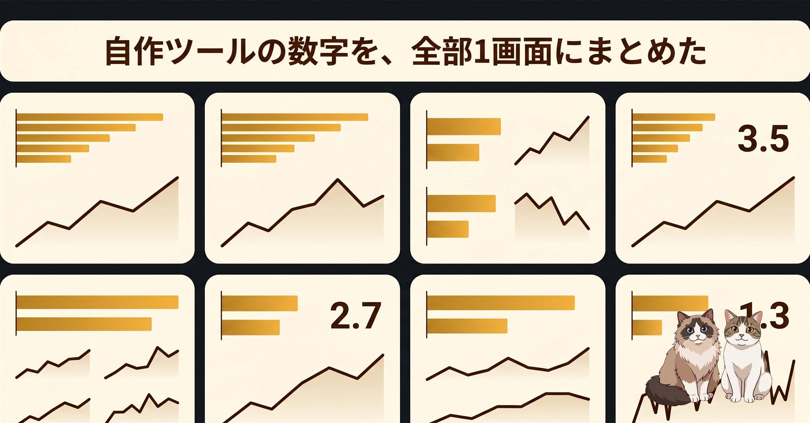

npm のダウンロード数を見て、GitHub Releases のページを開いて、リポジトリの star をまた別タブで確認して——「何個タブが要るんだろう」と思ったのがきっかけでした。1画面で全部見えるようにしたら、想像以上に手が止まらなくなった、という話です。
個人で公開しているツールは、配布先がそれぞれ違います。npm に置いてあるものは npm のサイトでダウンロード数を見るし、バイナリ配布しているものは GitHub Releases のアセットダウンロード数を見る。star の動きは GitHub のリポページで見る。配布先が違えば、見る場所も違います。
1本しか公開していないうちは気にならなかったのですが、本数が増えてくると「今週何件くらい落とされたっけ」という素朴な確認だけで、3ページを開いて閉じることになります。リリースのたびにそれをやっていると、そのうちやらなくなる。やらなくなると、数字が動いていないことにも気づかなくなる。
「タブを増やさず、1画面で全部見たい」という気持ちは、たぶんどこかでみんな持っているはずで、自分で作ることにしました。
作ったのが dl-stats です。GitHub のユーザー名を1つ設定するだけで、その人が公開しているリポジトリを自動で拾い、npm のダウンロード数・GitHub Releases のアセット DL 数・star 数を1か所に集めます。
/api/stats.json で全データを JSON で取れる。手元のスクリプトや別ページからも使える「数字を見るためだけのページ」なので、画面はあえて軽くしました。グラフと数字、それだけ。設定 UI も最小限です。
運用は Cloudflare の無料枠だけで完結させました。常駐サーバーがいない構成なので、放っておいてもお金が出ていかない。個人ツールはここが一番大事だと思っています。
認証情報は wrangler secret put で環境変数に入れる方針にしました。コードには何も書かない。手元と本番で同じ手順を踏むので、設定がぶれない。個人ツールでこの規模なら、これが一番シンプルだと思っています。
ツールを「数えて見せる」場所を作ったので、ついでに「並べて見せる」場所も整えることにしました。ishizakahiroshi.github.io の更新を3点。
any-ai-cli として出していたものを many-ai-cli に改名したので、サイト側の表記も合わせたlatest-note.json を更新。サイトを開くと「今書いている記事」が出るどれも派手な機能ではないのですが、「自分で手を入れる工程」を減らしておくのが大事で、サイトを直したくないからツールを公開しない、みたいな順序のねじれを防いでいます。
個人ツールは、公開した瞬間がピークになりがちです。誰が使っているか分からないし、数字も見えないので、だんだん「あってもなくてもいい感じ」になってきて、最後は触らなくなる。
dl-stats を作った動機はそこに尽きていて、何か壮大な目的があるわけではないです。1画面で全部見える、それだけで十分でした。グラフの線が少し上がっているのを見ると「そういえばあれ、まだ直せるところあったな」と思い出します。逆に、横ばいでも「ちゃんと動いているな」で安心できる。どっちでも次の一歩につながる。
ポートフォリオも、完璧に作ろうとすると手が止まるので、動いている状態のまま小さく更新し続けるほうが性に合っています。作ったものが見える場所にある。それだけで、次を考えやすくなる気がしています。